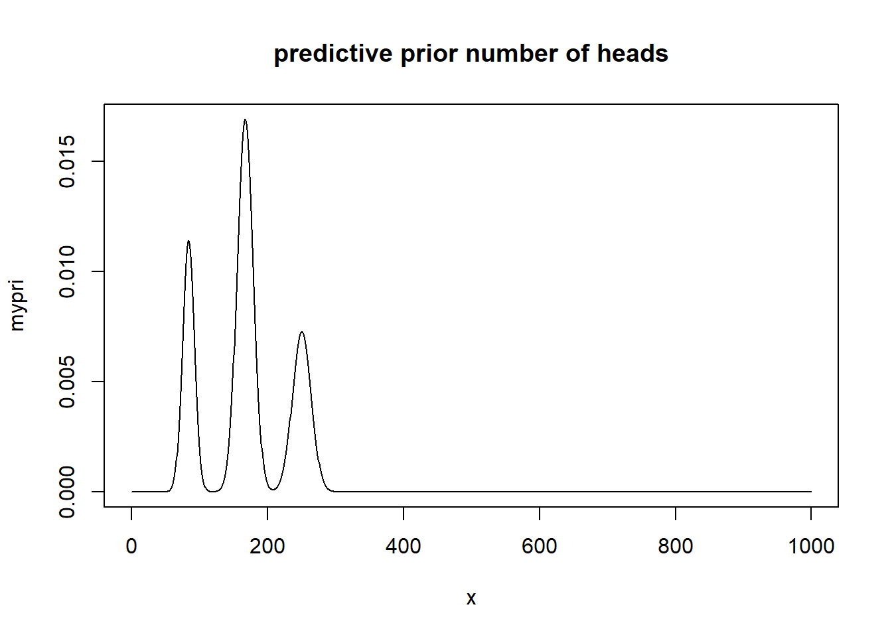
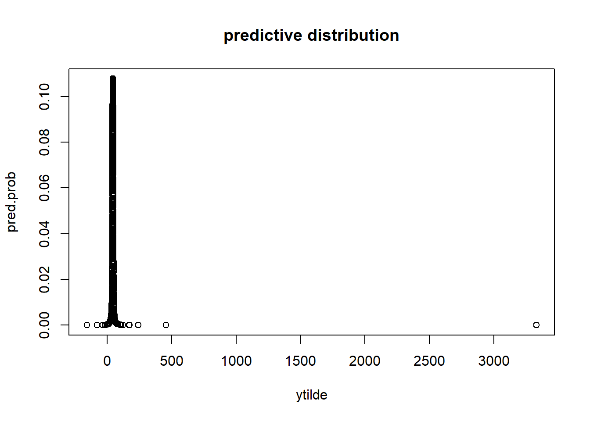

Chapter 2 Single parameter models
2.1 Estimating a probability from binomial data
\[\begin{equation} p(y | \theta) = {n \choose y}\theta^y(1-\theta)^{n-y} \tag{2.1} \end{equation}\]
To perform Bayesian inference we assume \(\theta \sim U(0,1)\) where the posterior is
\[\begin{equation} p(\theta | y) \propto \theta^y(1-\theta)^{n-y} \tag{2.2} \end{equation}\]
which is the form of a beta distribution \(\theta | y \sim Beta(y+1, n-y+1)\)
2.2 Posterior as a compromise between data and prior information
The posterior is less variable than the prior because it incorporates the information from the data.
\[\begin{equation} E(\theta) = E(E(\theta | y)) \tag{2.3} \end{equation}\]
\[\begin{equation} V(\theta) = E(V(\theta|y)) + V(E(\theta | y)) \tag{2.4} \end{equation}\]
where \(\theta|y\) is the posterior. So the average of the prior, is the average of the posterior means over the distribution of possible data. The variance of the prior (2.4) says the posterior variance is on average smaller than the prior variance.
2.3 Summarizing the posterior inference
The mean, median, mode, and standard deviation of the posterior distribution summarize the all the current information about a model.
Posterior quantiles and intervals
The posterior uncertainty can be reported by presenting the quantiles of the posterior distribution. The interval, a central interval of posterior probability corresponds to the case of 100(\(1-\alpha)\%\), to the range of values above and below which lies exactly 100(\(\alpha/2)\%\) of the posterior probability. The interval estimates are posterior intervals. This differences from the confidence interval because the confidence interval is not a probability interval, because either the parameter is within the region or it is not, but the confidence interval provides information in the long run over repeated experimentation as to how many experiments would contain the true parameter.
There is also the highest posterior interval which is a probabilistic interval that is not less than any region outside of the interval.
2.4 Informative prior distributions
the property that the posterior distribution follows the same parametric form as the prior distribution is called conjugacy. Where the beta prior distribution is a conjugate family for the binomial likelihood.
so given the binomial likelihood \(p(y|\theta)\propto \theta^a(1-\theta)^b\), and a prior density \(p(\theta)\propto \theta^{\alpha-1}(1-\theta)^{\beta-1}\) the posterior is of the beta family.
\[ \begin{aligned} p(\theta | y) &\propto \theta^y(1-\theta)^{n-y}\theta^{\alpha-1}(1-\theta)^{\beta-1}\\ &= \theta^{y+\alpha-1}(1-\theta)^{n-y+\beta-1}\\ &= Beta(\theta | \alpha+y, \beta+n-y) \end{aligned} \]
Conjugate prior distributions
Conjugacy is formally defined as if F is a class of sampling distributions \(p(y|\theta)\), and P is a class of prior distributions for \(\theta\), then the class P is conjugate for F if \(p(\theta | y) \in P\) for all \(p(.|\theta)\in F\) and \(p(.)\in P\).
Conjugate prior, distributions, exponential families, and sufficient statistics
Posterior distributions can be derived using sufficient statistics from exponential families. The exponential family is defined as
\[ \begin{aligned} p(y_i | \theta)=f(y_i)g(\theta)e^{\phi(\theta)^Tu(y_i)} \end{aligned} \] Where \(\phi(\theta), u(y_i)\) are vectors of equal dimension to that of \(\theta\). The \(\phi(\theta)\) is called the natural parameter for the family (F). The likelihood of a sequence \(y=(y_1,...,y_n)\) iid is
\[ \begin{aligned} p(y | \theta)&= (\prod_{i=1}^n f(y_i)) g(\theta)^n exp(\phi(\theta)^T \sum_{i=1}^n u(y_i)) \\ &\propto g(\theta)^ne^{\phi(\theta)^Tt(y)}, t(y)=\sum_{y=1}^n u(y_i) \end{aligned} \]
The sufficient statistic for \(\theta\) is \(t(y)\) because the likelihood for $depends on the data, y, only through the value of t(y).
Sufficient statistics benefit posterior distributions because if the prior density is specified as \[ \begin{aligned} p(\theta)&\propto g(\theta)^{\eta} e^{\phi(\theta)^T \nu} \\ \end{aligned} \] Then the posterior density using sufficient statistics is
\[ \begin{aligned} p(\theta | y ) &\propto g(\theta)^{\eta+n} e^{\phi(\theta)^T (\nu+t(y))} \\ \end{aligned} \]
Exponential families are the only classes of distributions that have natural conjugate prior distributions.
2.5 Normal distribution with known variance
The normal distribution is foundational to statistical modeling, with the central limit theorem (CLT) allowing for the use of normal likelihood in many statistical problems which can approximate complex likelihoods. If the normal distribution does not provide a good model fit, finite mixtures of distributions can identify useful solutions.
Likelihood of one data point
With mean \(\theta\) and known variance \(\sigma^2\) the sampling distribution of a given point is defined
\(p(y|\theta) = \frac{1}{\sqrt{2*\pi*\sigma^2}}e^{-\frac{1}{2\sigma^2} (y-\theta)^2}\)
2.5.1 Conjugate prior and posterior distributions
The prior has the exponential family form given as \(\theta \sim N(\mu_0, \tau_0^2)\)
\[ \begin{aligned} p(\theta ) &\propto exp( \frac{1}{2\tau_0^2}(\theta-\mu_0)^2) \\ \end{aligned} \]
WHere completing the square can find the posterior distribution
\[ \begin{aligned} p(\theta | y ) &\propto exp(-1/2(\frac{(y-\theta)^2}{\sigma^2} +\frac{(\theta-\mu_0)^2}{\tau_0^2} ) ) \\ p(\theta | y ) &\propto exp( \frac{1}{2\tau_1^2}(\theta-\mu_1)^2), \theta|y \sim N(\mu_1,\tau_1^2) \end{aligned} \] where \(\mu_1 = \frac{1/\tau_0^2 \mu_0 + 1/\sigma^2 y}{1/\tau_0^2 + 1/\sigma^2}\) and \(1/\tau_1^2 = 1/\tau_0^2 +1/\sigma^2\)
In manipulating the distributions the inverse of the variance is defined as the precision. The posterior precision is equal to the prior precision plus the data precision. And the posterior mean is a weighted average of the prior mean and the observed value, y, proportional to the total precision.
Posterior predictive distribution
the posterior predictive distribution of a future observation, x, p(x|y) can be calculated
\[ \begin{aligned} p(x|y) &= \int p(x|\theta)p(\theta|y) d\theta &\propto \int exp(-1/2\sigma^2 (x-\theta)^2) exp(-1/2\tau_1^2 (\theta-\mu_1)^2) d\theta \end{aligned} \] the future observations, x, does not depend on the past observations y given \(\theta\).
Normal model with multiple observations
For multiple observations, y, the posterior density is formulated as:
\[ \begin{aligned} p(\theta | y ) &\propto p(\theta)p(y|\theta) \\ &=p(\theta)\prod_i p(y_i | \theta)\\ &\propto exp(-1/2\tau_0^2 (\theta-\mu_0)^2)\prod_i exp(-1/2\sigma^2 (y_i -\theta)^2)\\ &\propto exp(-1/2 (1/\tau_0^2(\theta-\mu_0)^2+ 1/\sigma^2\sum_i(y_i-\theta)^2) )\\ \end{aligned} \] Simplfying the algebra shows the posterior depends on y only through the sample mean (sufficient statistic), \(\bar{y}\) is the sufficient statistic for \(\theta\), and the final model is \(\bar{y} | \theta,\sigma^2 \sim N(\theta, \sigma^2/n)\)
2.7 Exercises
Question 1
prior Beta(4,4), where a coin is tossed 10 times and heads appears fewer than 3 times. the exact posterior is Beta(4+y, 4+10-y) for y=0,1,2. Since we don’t know the observed heads, but that \(y<3\) we plot the posterior distributions for each possibility. For 2 heads it is closer to the prior, with posterior mean of 0.33, which is closest to the prior mean of 1/2.
theta<-seq(from=0,to=1,by=0.01)
plot(theta,dbeta(theta,4,4),type='l',ylim=c(0,5)) ## prior
lines(theta,dbeta(theta,4+1,4+10-1),lty=2) ## 1 success
lines(theta,dbeta(theta,4+2,4+10-2),lty=3,col='red') ## 2 succe
lines(theta,dbeta(theta,4,4+10),lty=4,col='blue') ## 0 successes
legend(0.6, 4,
legend=c("prior", "0 H", "1 H", "2 H"),
col=c("black","blue","black", "red"), lty=c(1,4,3,2), cex=0.8)
Normal approximation example
For female births we have beta(438,544) we use the normal approximation. This replicates Gelman’s Figure 2.3 (a, b)
theta<-seq(from=0.001,to=1,by=0.01)
## example births
postMean <-function(alpha,beta,y,n){
return( (alpha+y)/(alpha+beta+n))
}
postVar<-function(alpha,beta,y,n){
return( ((alpha+y)*(beta+n-y))/( (alpha+beta+n)^2*(alpha+beta+n+1)) )
}
sdnorm<-sqrt(postVar(438,544,0,0))
logitMean<-log( postMean(438,544,0,0)/(1-postMean(438,544,0,0)))
logitTheta<-log(theta/(1-theta))
par(mfrow=c(1,2))
plot(theta,dbeta(theta,438,544),type='l',xlim=c(0.35,0.55),main="posterior beta") ## prior
abline(v=0.446,col='red')
draws<-rbeta(1000,438,544)
plot(logitTheta,dnorm(logitTheta,mean =logitMean, sd=sd(log(draws/(1-draws))) ),type='l', xlim=c(-0.5,0.1),main="Normal approx.") ## prior
abline(v=-0.22,col='red')
Question 3
The prior predictive distributions for the number of 6’s in a fair roll, tossed 1,000 times will follow a beta distribution. Let y be the number of 6’s in 1000 rolls of fair die, the probability for a 6 is 1/6, so the number of 6’s in this trial is approximatley 167, and 833 failures as the prior prediction.
We plot the beta distribution of the expected number of heads in 1000 tosses.
The normal approximation shows the probability of heads in a given 1000 tosses, using a non-informative prior beta(167,833) which has a prior predictive mean of \(exp(-1.79)/(1+exp(-1.79)) = 0.143\). This is not the same for number of success in 1000 tosses.
We find the probability distribution of a given success and the prior probability predictive interval follows a beta with 95% (0.12,0.17) for hte probability of rolling a 6
## based on normal approximation sketch the distribution of y
## for normal we use the logit transform
## n = 1,000
## first lets construct a beta distribution.
## let the prior be beta(4,4) or even beta(1,1)
par(mfrow=c(1,2))
plot(theta,dbeta(theta,167,833),type='l',xlim=c(0.1,0.5),main="prior beta") ## prior
# plot(theta,dbeta(theta,1,5),type='l',xlim=c(0.1,0.5), main='prior beta')
abline(v=0.167,col='red') ##
# qbeta(c(0.05,0.25,0.5,0.75,0.95),167,833)
## predictive on normal scale.
draws<-rbeta(1000,167,833)
logitMean<-log( 167/1000)
sdd<-sd(log(draws/(1-draws)))
plot(logitTheta,dnorm(logitTheta,mean =logitMean, sd=sdd ),type='l',main="Normal approx.of a total heads", xlim=c(-2,-1.4)) ## prior
abline(v=logitMean,col='red')
### the number of heads.
message("prior predictive mean:" ,round( exp(logitMean)/(1+exp(logitMean)),2))## prior predictive mean:0.14 qx<-(qnorm(c(0.05,0.25,0.5,0.75,0.95),mean =logitMean, sd=sdd ))
## this is the probability of landing 6 for theta
exp(qx)/(1+exp(qx))## [1] 0.1268384 0.1362323 0.1431020 0.1502578 0.1610662## wald 95% prior interval
c( exp(logitMean-1.96*sdd)/(1+exp(logitMean-1.96*sdd)),exp(logitMean+1.96*sdd)/(1+exp(logitMean+1.96*sdd)))## [1] 0.1239089 0.1647091Question 4
We have a mixture of 3 normal distributions, and show the central intervals for 5,25,50,75, and 95\(\%\) predictive probabilities. The question gives \(\theta\) as the probability of a 6 on a die, possibly unfair, in 1,000 tosses. we have \(\theta= 1/12,1/6, 1/4\) types of biased die. Using the normal approximation, the predictive prior probability is \(\sum_{\theta}p(\theta)p(y| \theta)\) where the likelihood is approximated using a normal distribution \(\mu = n*\theta_i, \sigma = n*\theta_i(1-\theta_i)\)
x<-seq(0,1000)-0.5 # continuity correction.
theta<-c(1/12,1/6,1/4)
n=1000
normLikelihood<-function(x,n,p){
mean<-n*p
varz<-n*p*(1-p)
return(dnorm(x,mean=mean,sd=sqrt(varz)))
}
a<-dnorm(x,mean=n*theta[1],sd=sqrt(n*theta[1]*(1-theta[1])) )
b<-dnorm(x,mean=n*theta[2],sd=sqrt(n*theta[2]*(1-theta[2])) )
c<-dnorm(x,mean=n*theta[3],sd=sqrt(n*theta[3]*(1-theta[3])) )
mypri<-a*0.25+b*0.5+c*0.25
sum(mypri) ## sums to 1 it is a distribution## [1] 1 par(mfrow=c(3,2))
plot(x,mypri,type='l',main='predictive prior number of heads')
data<-data.frame(x=x,p=mypri)
## highest probability interval
# 95%
plot(x,mypri,type='l',main=' 95% predictive prior number of heads')
abline(v=max(data[which(cumsum(data$p)<0.025),1])
)
abline(v=max(data[which(1-cumsum(data$p)>0.025),1]))
plot(x,mypri,type='l',main='75% predictive prior number of heads')
abline(v=max(data[which(cumsum(data$p)<0.125),1]))
abline(v=max(data[which(1-cumsum(data$p)>0.125),1])
)
plot(x,mypri,type='l',main='50% predictive prior number of heads')
abline(v=max(data[which(cumsum(data$p)<0.25),1]))
abline(v=max(data[which(1-cumsum(data$p)>0.25),1])
)
plot(x,mypri,type='l',main='25% predictive prior number of heads')
abline(v=max(data[which(cumsum(data$p)<0.375),1]))
abline(v=max(data[which(1-cumsum(data$p)>0.375),1])
)
plot(x,mypri,type='l',main='5% predictive prior number of heads')
abline(v=max(data[which(cumsum(data$p)<0.475),1]))
abline(v=max(data[which(1-cumsum(data$p)>0.475),1])
)
Question 8 (Normal distribution with unknown mean)
A random sample of n students is drawn from a large population, and weights are measured. The average height of the n sampled students is \(\bar{y}= 150\) lbs. Assume the weights in the population are normally distribution with unknown mean, \(\theta\), and known standard deviation 20 lbs. Suppose the prior for \(\theta \sim N(180, 40^2)\)
For known variance, the limit of the posterior is \(p(\theta,y)\approx N(\theta| \bar{y}, \sigma^2/n)\). And the direct formulation is \(p(\theta | \bar{y})= N(\theta | \mu_n,\tau_n^2).\) using equations 2.12.
For a posterior predictive interval, the marginal distribution for new data \(p(\tilde{y} | y) \sim N(\mu_n, \sigma^2+\tau_n^2)\)
mu_n<-function(mu0,ybar,n,tau02,sigma2){
mun<- (mu0/tau02 + (ybar*n)/sigma2)/(1/tau02 + n/sigma2)
return(mun)
}
taun2<-function(tau02,n,sigma2){
inv.taun2<- 1/tau02 +n/sigma2
return(1/inv.taun2)
}
ybar=150
sigma2=20^2
mu0=180
tau02=40^2
n=10
## posterior interval n=10
#lower<-round(qnorm(0.025,mu_n(mu0,ybar,tau02,10,sigma2),sd=sqrt(taun2(tau02,10,sigma2))),2)
upper<-round(qnorm(c(0.025,0.975),mu_n(mu0,ybar,tau02,10,sigma2),sd=sqrt(taun2(tau02,10,sigma2))),2)
message("posterior interval n=10: ",upper[1]," ",upper[2])## posterior interval n=10: 138.49 162.98## posterior predictive interval
upper2<-round(qnorm(c(0.025,0.975),mu_n(mu0,ybar,tau02,10,sigma2),sd=sqrt(taun2(tau02,10,sigma2)+sigma2) ),2)
message("posterior predictive interval n=10: ",upper2[1]," ",upper2[2])## posterior predictive interval n=10: 109.66 191.8 lower<-round(qnorm(0.025,mu_n(mu0,ybar,tau02,100,sigma2),sd=sqrt(taun2(tau02,100,sigma2))),2)
upper<-round(qnorm(0.975,mu_n(mu0,ybar,tau02,100,sigma2),sd=sqrt(taun2(tau02,100,sigma2))),2)
message("posterior interval n=100: ",lower," ",upper)## posterior interval n=100: 146.16 153.99 ## this approximately equals the limit
print("The asymptotic approximation")## [1] "The asymptotic approximation" qnorm(c(0.025,0.975),mean=150, sigma2/100)## [1] 142.1601 157.8399## posterior predictive interval
lower2<-round(qnorm(0.025,mu_n(mu0,ybar,tau02,100,sigma2),sd=sqrt(taun2(tau02,100,sigma2)+sigma2) ),2)
upper2<-round(qnorm(0.975,mu_n(mu0,ybar,tau02,100,sigma2),sd=sqrt(taun2(tau02,100,sigma2)+sigma2) ),2)
message("posterior predictive interval n=100: ",lower2," ",upper2)## posterior predictive interval n=100: 110.68 189.47Question 10
suppose y1,…,y5 are iid Cauchy(\(\theta,1\)) r.vs. and the prior distribution for\(\theta \sim U[0,100]\). the given observations are y=43,44,45,46.5,47.5.
- compute the unnormalized posterior density on a grid of points \(\theta=0 1/m, 2/m, ... 100\). using the grid approximation, compute and plot the posterior density as a function of \(\theta\)
y= c(43,44,45,46.5,47.5)
m=1000
theta<-seq(from=0,to=100000)/m
## p(theta | y) ~ p(y|theta)*p(theta)
unnorm.post<-dcauchy(y,location=theta,scale=1)*dunif(theta,min=0,max=100) ## un norm post
post<-unnorm.post/sum(unnorm.post)
par(mfrow=c(1,3))
plot(theta,post,type='l',main='Normalized posterior')
- Sample 1000 draws from theta from posterior density and plot histogram we sample from theta [0,100] using the grid approximation, and the probability is from the posterior distribution.
samps<-(sample(theta,1000,prob=post,replace=T))
hist(samps,main=mean(samps))
##sample mean is close to the mean of the observed.- Using the previous 1000 samples of \(\theta\) to obtain 1000 samples from the predictive distribution of a future observation \(y_6\), and plot the predictive draws. we use the sampled thetas from the posterior to sample from the Cauchy distribution. The predictive probability follows \(p(x|y) =\int p(x|\theta)p(\theta|y)d\theta\) where \(p(x|\theta)\) follows from the Cauchy distribution, and we have the posterior values for each theta (given the uniform grid of thetas). then for each predictive value, we sum the total probability across all thetas to compute the predictive probability. The maximum predictive value probability 44.745 with probability of 0.10.
## predictive distribution ? ??
# p(x | y) = int p(x|theta)*p(theta|y ) dtheta
## the posterior is p(theta|y)
# the likelihood p(x|theta) ## we use the sampled thetas using the posterior
ytilde<-rcauchy(1000,location=samps,scale=1)
## probability of the samples
#prob_samp<-post[match(samps,theta)]
summary(ytilde) ## we have a wide distribution of predictive values.## Min. 1st Qu. Median Mean 3rd Qu. Max.
## -156.02 42.75 45.20 48.98 47.83 3328.92## for all predictive values, find the total probability
## int p(x|theta)*p(theta|y) d\theta note that p(x|theta) is a function of theta, so we input hte theta grid.
pred.prob<-sapply(ytilde,function(x) sum(dcauchy(x,location=theta,scale=1)*post))
plot(ytilde,pred.prob, main='predictive distribution')
## maximum predictive probability
message('max pred. prob ', round(ytilde[which(pred.prob==max(pred.prob))],3))## max pred. prob 44.74